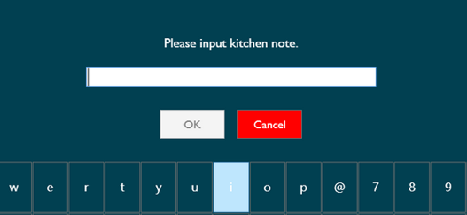

AlohaAloha POS system for restaurants to take dine-in order, online order, complete payment transations and provide food preparation and delivery servicesPOS systemsC#, SQLN/ASep 2016-Aug 2017New and old clients are using the POS system including Aloha, IGourmet and OrcaPOS. As a QA at a POS supplier company, I got the opportunity to troubleshoot all the POS system, install hardware including printers and monitors, write technical reports for OrcaPOS and program new functions for OrcaPOSI did version release functions testing for OrcaPOS, cash drawers, printers and write reports.The technical reports I wrote included how to use the OrcaPOS menu.This was for both the company and the clients to use. Image below is an example of what I did for labeling OrcaPOS Since there were different POS systems (Aloha, IGourmet, OrcaPOS), this meant there are different functions and settings. I had to make sure that all edge cases were tested thoroughly, this included from the user creating the menu, to the cashier using the pos system, to the receipt being printed out. Below is an example of the cashier coming back from their break on Aloha systemGetting to QA all the systems, I was curious on how the programming side worked. I asked my manager if I can do some programming for OrcaPOS. It was approved and I got to help fix some bugs. The bugs included debugging why the following were not behaving properly: adding extra notes on the receipt for the chef, phone orders, receipt printing the wrong amount of orders. It turned out that in the database, there were primary keys in database not referenced properly in another tableGetting to QA on the frontend and help fix the bugs helped me understood how everything connected to the POS system. Examples of what I got to test and help fix for the receipt, phone order and kitchen note are shown below. Below are examples of OrcaPOS system
